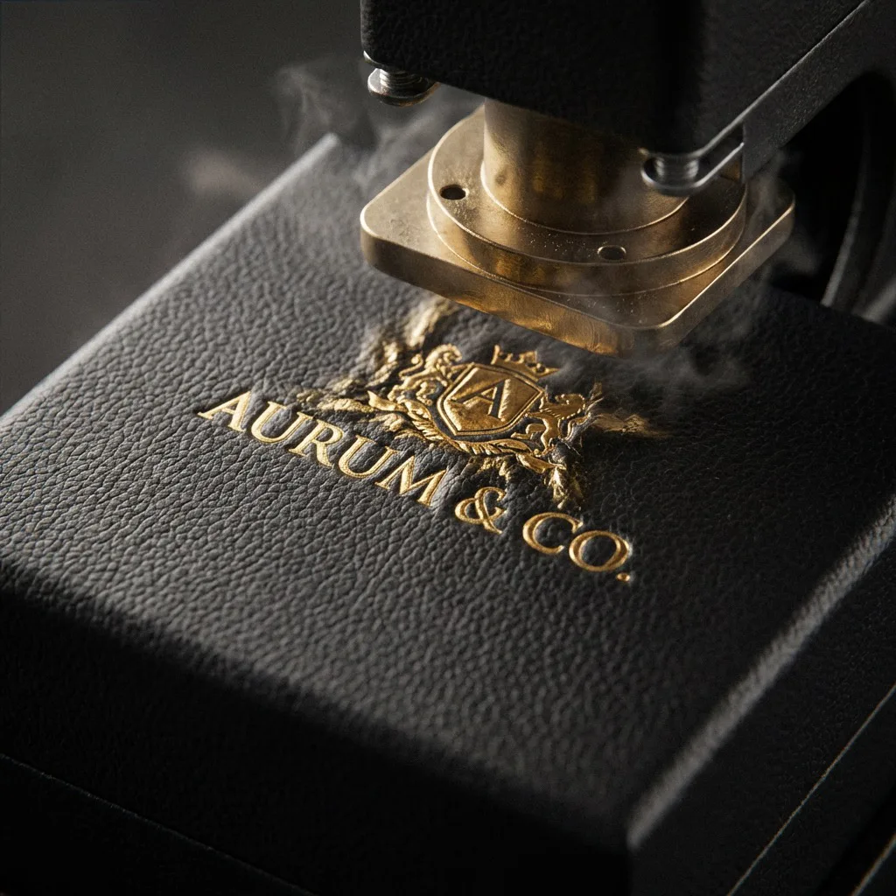

Use the right document
Sample approval defines the reference; production inspection tests the lot against it.
The packaging sample approval checklist records what a physical sample proves before bulk production. This page starts after that decision. It helps a buyer transfer the approved files, limits, references, pack-out, and open conditions into first-article, in-process, final, carton, and release records.
An inspection cannot repair a vague purchase specification. “Same as sample,” “good color,” or “premium quality” does not identify a revision, tolerance, viewing condition, defect class, measurement method, sample plan, or release owner. Write the acceptance criteria before the factory presents the lot.
Inspection is evidence, not insurance. Sampling can miss defects, and a final inspection cannot replace process controls. Use risk-based prevention, production checkpoints, representative selection, traceable records, containment, corrective action, and controlled release together.
Free inspection record planner
Count the records your chosen plan creates.
Enter a buyer-defined coverage plan to estimate inspection events, examined units, characteristic observations, carton checks, and retained references. Different stages may need different plans; calculate them separately when the counts differ.
This is not an AQL calculator. “Units examined per configuration and round” and all other counts must come from the buyer's approved risk and sampling plan. The arithmetic does not make those inputs statistically valid.
Community demand signals
Buyers report failures between request, sample, and bulk.
These community discussions identify recurring control gaps. They are not verified defect rates, technical standards, or supplier endorsements.
Samples arrive without a clear quote or version.
A buyer described unlabeled and unexplained sample variants that made comparison harder. Inspection therefore begins with configuration, quotation, specification, artwork, and approved-sample identity.
Read the Reddit discussionThe sample looks right; production is “almost the same.”
Another discussion describes thinner material, changed color, and weaker packaging after sample approval. A signed object needs written material, color, construction, tolerance, packing, and inspection references.
Read the Reddit discussion“What percentage is normal?” has no universal answer.
Packaging buyers discuss color, fold, registration, spot-finish, and fit problems, but disagree on an acceptable percentage. Define project defects and the selected sampling decision before counting results.
Read the Reddit discussion1 · Build the inspection file
Make the production lot traceable to one approved scope.
Inspectors need the exact references and decision rules at the inspection location—not a trail of contradictory messages.
| Control block | Required identity | Question it answers |
|---|---|---|
| Order and lot | Buyer, supplier legal entity, factory site, purchase order, configuration or SKU, lot ID, lot quantity, production dates, carton range, and declared lot boundary. | Which physical goods does this decision cover? |
| Approved build | Specification, dieline, artwork, version matrix, bill of materials or named construction, approved sample or reference, packing instruction, and approved exceptions. | What exactly must the lot match? |
| Characteristics | Requirement, tolerance or limit, defect code, classification owner, method, equipment, lighting, sample preparation, and required evidence. | How will conformity be observed or measured? |
| Sampling decision | Current standard and revision if used, lot type, inspection scheme or level, selected sample size, acceptance/rejection rule, switching rule, and authorized plan owner. | How are inspected results converted into a lot decision? |
| Authority | Stop-work owner, concession owner, rework approver, reinspection owner, release authority, shipment hold status, and required signatures. | Who may contain, accept, reject, or release? |

2 · Choose checkpoints
Inspect early enough to prevent, and late enough to release.
- Incoming or pre-productionConfirm material identity, artwork, tools, color and finish references, components, settings, and open approvals before value is added.
- First production articleCheck an actual production-route unit before the run advances. Record setup status and authorize continuation or correction.
- In-processDistribute checks across time, machines, lanes, cavities, stacks, operators, material lots, or other meaningful sources of variation.
- Final packed lotInspect finished units and real master cartons after required production and packing are complete, before shipment release.
- Loading or dispatchConfirm released lot identity, carton count and condition, pallet or container loading, seals, documents, and handover evidence where required.
A final inspection cannot prove conditions that were covered by later assembly or destroyed during testing. Assign each characteristic to the stage where it can be observed and corrected.
3 · Inspect the full packaging system
Record identity, function, appearance, and pack-out separately.
A pack may look acceptable yet contain the wrong artwork, fail to close, scuff the product, carry unreadable information, or use the wrong carton count.
| Characteristic group | Possible checks | Record needed |
|---|---|---|
| Identity and version | SKU, size, language, market, artwork, barcode or variable data, component combination, lot, and approved references. | Observed identity and source record; do not infer from appearance alone. |
| Dimensions and fit | Critical inside and outside dimensions, product envelope, insert cavity, clearance, squareness, closure, movement, opening, and removal. | Actual measurement, method, equipment, unit ID, tolerance, and result. |
| Material and construction | Board, paper, flute, film, label stock, adhesive, insert, accessory, thickness or mass where specified, grain or flute direction, joints, seams, glue, and assembly. | Material identity or evidence plus visible and measured results. |
| Print and information | Copy, symbols, orientation, color, coverage, density or agreed measured reference, registration, small type, reverses, contamination, scratches, and codes. | Viewing condition, physical or measured reference, defect location, photo, and verifier or system result where required. |
| Finishing and appearance | Foil, emboss, deboss, varnish, laminate, texture, wrap, corners, turn-ins, edges, surface marks, gloss, cracking, delamination, and unwanted transfer. | Named defect, affected location and extent, classification, reference, and disposition. |
| Function and handling | Fold and erection, drawer travel, lid fit, magnetic or tuck closure, label peel or application, ribbon or handle, product loading, removal, reclosure, and packing sequence. | Defined method, attempts or cycles where applicable, actual behavior, and result. |
| Quantity and packing | Finished quantity, version reconciliation, individual protection, bundle or inner pack, units per carton, mixed-SKU rule, carton dimensions, gross weight, closure, marks, pallet, and condition. | Actual count, carton IDs, measured pack data, variance, and shipment-hold status. |
4 · Define defects before counting
Classification follows consequence—not a generic photo library.
Critical, major, and minor labels are meaningful only when tied to the buyer's product, market, information, function, appearance, contract, and risk. The same visible mark may have a different consequence on an unprinted shipping case, a luxury presentation face, or required product information.
- Can the issue create a safety, legal, identity, traceability, or required-information risk?
- Can it prevent fit, protection, packing, opening, closing, application, scanning, sale, or intended use?
- Does it materially depart from the approved appearance or customer-facing standard?
- Is it measurable, repeatable, and linked to a controlled reference?
- Does one defect cause another unit, carton, configuration, or lot to become suspect?
Publish a project defect library with codes, descriptions, boundaries, images, classification, and escalation. Inspectors should record the observed condition before applying the classification.

Sampling boundary
Name the current system—never write “AQL inspection” alone.
Acceptance sampling is a defined statistical decision system, not an automatic permitted percentage of defective packaging.
ISO states that ISO 2859-1:2026 defines AQL-indexed acceptance-sampling schemes for lot-by-lot inspection by attributes and replaces the 1999 edition. ISO also identifies single, double, multiple, reduced, tightened, and skip-lot elements within the system. The correct plan depends on the applicable contract and qualified selection—not this guide.
ISO 28590:2017 provides an introduction to the ISO 2859 family and guidance on selecting an appropriate inspection system. An isolated lot, continuing series of lots, destructive test, measurement variable, process-control decision, or high-consequence characteristic may need a different approach.
Record the complete decision basis: standard and edition, lot definition, inspection scheme or level, code letter where applicable, sample size, defect classes, AQL or other index where applicable, acceptance and rejection numbers, switching status, random-selection method, and responsible owner. Do not copy old 1999 tables into a 2026 claim.
5 · Execute reproducibly
A pass/fail total is not enough evidence.
The record should allow another qualified person to understand what was selected, how it was checked, what was found, and how the lot decision was made.
- Select without supplier cherry-pickingUse the approved random or distributed method across the actual lot and record carton, pallet, time, position, machine, or other relevant source.
- Control the methodUse identified and suitable equipment, defined lighting or viewing conditions, representative products, conditioning, scan systems, fixtures, and trained operators.
- Record actual valuesKeep measurements, observed identity, defect code, location, quantity, photo reference, unit ID, carton ID, and result—not only a tick mark.
- Preserve failed evidencePhotograph and identify representative defects, retain units when required, and prevent failed samples from being returned anonymously to accepted stock.
- Reconcile countsConnect inspected units, destructive samples, rework, replacements, overrun or underrun, retained references, and shipped quantity.
6 · Contain, correct, and reinspect
A failed lot needs a controlled disposition path.
Do not turn a failure into a pass by deleting samples, averaging incompatible configurations, or reinspecting only supplier-selected replacements.
- 01
Hold and identify
Stop shipment or further processing as required. Mark the affected lot, configurations, cartons, units, locations, and related material or production windows.
- 02
Document the nonconformance
Record requirement, actual condition, evidence, counts, classification, extent, immediate containment, and who was notified.
- 03
Determine cause and scope
Investigate material, artwork, setup, tool, process, equipment, operator, handling, packing, and change records; identify other potentially affected goods.
- 04
Approve correction or disposition
Rework, sort, replace, scrap, return, accept by documented concession, or choose another authorized action. Define quantity, method, risks, and owner.
- 05
Reinspect and release
Use an approved reinspection plan after correction. Keep original failure, correction, reinspection, concession, and final shipment decision connected.

7 · Release the shipment
Release the lot and logistics data together.
Before authorization, confirm the inspection report and nonconformance status, accepted configuration quantities, individual packing, master-carton count and range, external dimensions, gross weight, carton marks, pallet data, shipment hold, retained references, required test or certificate evidence, and dispatch documents.
The release owner should be named in the purchase and quality plan. Silence, payment timing, cargo pickup, or a supplier's “QC passed” message is not a substitute for the buyer's required release record.
Use the packaging logistics guide to connect approval, inspection, carton data, freight booking, and warehouse delivery without compressing them into one unsupported lead time.
Request a packaging production reviewBuyer questions
Custom packaging quality inspection FAQ.
The actual inspection and sampling plan must follow the packaging, lot, risks, contract, market, and current applicable requirements.